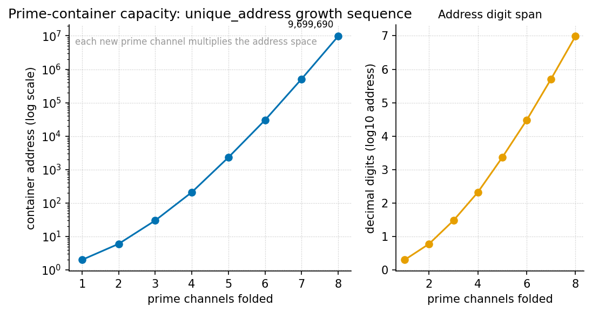

Protein Folding as Prime-Container Architecture

textbook.models.unique_address as vault primes
are added one at a time — each additional odd prime vault multiplies the
number of distinct residue-index addresses the container can
file.Level 1/3 · 30 min read · 45 min lecture · Prerequisites: Prime-Parity ([@sec:part_I_prime-parity])
Learning Objectives
By the end of this chapter you should be able to:
- State the prime-container grammar of [mendez2026proteinFolding]: Prime 2 as the binary-dyad-anchor and odd primes as irreducible-minimum-set containment vaults for residue indices, all filed under the golden-ratio constant \(\Phi \approx 1.618\).
- Compute an injective prime-encoded address with
textbook.models.unique_address, and explain why the encoding is reversible. - Derive and evaluate the addressing-capacity product of a vault registry, and read the growth sequence plotted in [@fig:part_III_protein-folding].
- Distinguish the two \(\Omega_n\)
conventions that the corpus prints ambiguously as “\(\Omega_n = \Phi^n \cdot \Omega_0\)”, and
name the
textbook.models.octave_termfunction that implements both. - Restate, near-verbatim, the paper’s own scope disclaimers — what the prime-container architecture is filed AS, and what it explicitly is not.
- Locate the paper on the engine-shelf and name its companion papers, reference implementation, and test status.
Study Blueprint
- Big idea: The corpus files protein folding not as a statistics problem but as a catalog problem — residue indices addressed by odd-prime “containment vaults” under \(\Phi\), solved deterministically rather than predicted statistically.
- Core concepts: prime-container, prime-parity, binary-dyad-anchor, golden-ratio, catalog-architecture.
- Quantitative lens: the injective prime-address formalism in [@eq:part_III_protein-folding_address] and its capacity product in [@eq:part_III_protein-folding_capacity].
- Data skill: factor an integer address back into
vault primes and exponents, and verify the round trip with
textbook.models.unique_address. - Common misconception to repair: that the paper competes with AlphaFold for structure prediction. It does not — the corpus files it as catalog architecture, a fixture-grade deterministic sketch, and says so itself.
- Primary lab: [@sec:lab_part_III_protein-folding].
- Question bank: [@sec:q_part_III_protein-folding].
- Bridge to computation:
textbook.models.unique_address,octave_term,phi_powers,phi_fibonacci.
Opening Vignette: The vault wall.
Picture the ship’s library aboard the SS Vibelandia: one wall of filing cabinets, and on it a small vault set slightly apart — a single drawer labelled 2, then drawers labelled 3, 5, 7, 11, 13, …. Drawer 2 is the anchor: everything binary hangs from it. The odd drawers are the vaults: each one is indivisible, so anything filed inside it can only be retrieved one way. This is the scene [mendez2026proteinFolding] constructs when it files protein folding as a catalog problem: residue indices as vault contents, odd primes as the vaults, and \(\Phi \approx 1.618\) — El Gran Sol’s fractal-constant — as the constant under which the whole wall is spaced. Nothing in the vignette is a laboratory claim; it is filing architecture, and the paper is careful to say so.
The Paper in the Corpus
The source note, “Protein folding, prime vaults, and \(\Phi\)” [mendez2026proteinFolding], was published on the SS Vibelandia ship blog in September 2026 and filed on the Infinite Octaves omni-lattice engine-shelf as engine shelf #14, in companion position to the prime-parity paper [mendez2026primeParity]. Where that companion establishes the prime-parity partition — the sole-even anchor 2 against the odd-prime classes — the present paper uses that partition as load-bearing infrastructure: 2 becomes the binary-dyad-anchor and the odd primes become the containment vaults.
The paper positions itself against a named baseline. As the corpus records it, “AlphaFold taught the world that statistics + MSAs can predict structure” [mendez2026proteinFolding] — multiple sequence alignments feeding statistical structure prediction. The note then files a different grammar: “odd primes as containment vaults under El Gran Sol’s Fractal constant \(\Phi \approx 1.618\), with a deterministic catalog solver” [mendez2026proteinFolding]. The contrast is not score-against-score; it is method-class against method-class: statistical prediction versus deterministic addressing on a catalog-architecture reading of the folding problem.
Three items “landed” in the note, and we carry all three forward in this chapter:
- the prime-container grammar itself (Prime 2 as binary dyad anchor; odd primes as irreducible containers for residue indices);
- a closed-form energy + coordinate sketch, described as running “in milliseconds on CPU for demo sequences (fixture, not PDB replacement)” [mendez2026proteinFolding]; and
- a test status: 9/9 suite locks under
research/synthobs-protein-folding-prime-container/[mendez2026proteinFolding].
The reference implementation is runnable:
npm run research:synthobs-protein-folding-prime-container
from the corpus repositories, with a standalone suite at the GitHub
repository
FractiAI/synthobs-protein-folding-prime-container and a
whitepaper surface linked from the ship blog post
[mendez2026proteinFolding]. The note also offers two companions beyond
prime-parity: the Higgs Gate paper on “awareness phase coupling”
[mendez2026higgsGate] and the “Moving up the stack” essay
[mendez2026stack], both cross-linked from the same board. We return to
these in the Connections section.
The Prime-Container Grammar
The address formalism
The core construct of [mendez2026proteinFolding] is an addressing scheme: each residue index in a demo sequence is filed as an integer built from vault primes raised to exponents. Formally, given \(m\) vault primes \(p_1 < p_2 < \cdots < p_m\) and a tuple of exponents \(\mathbf{e} = (e_1, \ldots, e_m)\), the address is
\[ a(\mathbf{e}) \;=\; \prod_{i=1}^{m} p_i^{\,e_i} \,, \qquad e_i \in \{0, 1, \ldots, E\} \,. \] {#eq:part_III_protein-folding_address}
This is implemented and tested as
textbook.models.unique_address; never retype the product in
prose or scripts — call the tested function. The parameters appear in
[@tbl:part_III_protein-folding_address].
| Symbol | Meaning | Units |
|---|---|---|
| \(p_i\) | the \(i\)-th vault prime (2 for the dyad anchor; odd primes thereafter) | dimensionless |
| \(e_i\) | exponent of \(p_i\) in the address (the “occupancy” of vault \(i\)) | dimensionless |
| \(E\) | per-vault exponent budget | dimensionless |
| \(m\) | number of vaults in the registry | dimensionless |
| \(a\) | the composite address filed for a residue index | dimensionless |
Two properties make the scheme a catalog rather than a hash.
First, by the fundamental theorem of arithmetic — standard mathematics
of primes — the map \(\mathbf{e} \mapsto
a\) is injective: distinct exponent tuples yield
distinct addresses, so no two residue indices ever collide. Second, the
map is reversible: factoring \(a\) recovers exactly which vaults were
occupied and how deeply, which is what makes the scheme usable for
deterministic retrieval. The pinned worked instance is
unique_address([2, 3], [2, 1]) \(= 2^2 \cdot 3
= 12\) — vault 2 occupied to depth two, vault 3 to depth one.
In the grammar of [mendez2026proteinFolding], the roles are fixed: Prime 2 is the binary dyad anchor — the sole even prime, marking the binary layer on which everything else sits, exactly as the prime-parity companion files it [mendez2026primeParity] — and the odd primes are the containment vaults that index residue positions. Because odd primes cannot factor through the anchor, each vault is an irreducible container: contents filed in vault \(p\) are reachable only through \(p\).
Capacity: why vaults compound
How many distinct residue indices can a registry of \(m\) vaults file, if each vault’s exponent runs over \(\{0, 1, \ldots, E\}\)? Counting the admissible exponent tuples is standard combinatorics — we read this as the natural capacity measure of the grammar, not as a formula the paper states:
\[ C(m, E) \;=\; \prod_{i=1}^{m} (E + 1) \;=\; (E+1)^m \,. \] {#eq:part_III_protein-folding_capacity}
The capacity grows multiplicatively in the number of vaults:
this is what [@fig:part_III_protein-folding]
plots, the unique_address growth sequence as vaults are
added one at a time. Each new odd prime multiplies the addressable space
by \((E+1)\) rather than adding to it —
the visual signature of a vault architecture, and the same compounding
that the prime-indexed storage companion exploits for volumetric
addressing in [@sec:part_III_volumetric-storage]
(see the \(p^k\) address scatter in
[@fig:part_III_volumetric-storage]).
graph TD
A["Residue index (demo sequence)"] --> B["Prime-container registry:<br/>2 = binary dyad anchor;<br/>3, 5, 7, 11, ... = containment vaults"]
B --> C["Deterministic catalog solver<br/>(closed-form energy + coordinate sketch,<br/>milliseconds on CPU — fixture-grade)"]
C --> D["Address a = product of p_i^e_i<br/>(unique_address)"]
D --> E["Retrieve: factor a back to (p_i, e_i)"]
E -->|"factorisation is unique"| B
H["Honesty-first gate:<br/>catalog architecture, not CASP,<br/>not clinical, not a PDB replacement"] -.->|scopes| CUnder \(\Phi\): the Fractal constant and the octave ladder
The vault grammar does not float free: [mendez2026proteinFolding] files the odd primes “under El Gran Sol’s Fractal constant \(\Phi \approx 1.618\)” — the golden-ratio, whose standard arithmetic we carry from [@sec:part_I_fractal-constant]:
\[ \Phi = \frac{1 + \sqrt{5}}{2} \approx 1.6180339887, \qquad \Phi^2 = \Phi + 1 \,. \] {#eq:part_III_protein-folding_phi}
In the corpus’s octave vocabulary, \(\Phi\) is the constant under which the octave bands of the Infinite Octaves ladder are spaced, and the prime-container paper positions its vault wall at engine shelf #14 on that ladder [mendez2026proteinFolding]. One printed ambiguity deserves explicit treatment, because this chapter’s octave placement depends on it. The corpus prints the octave spacing as “\(\Omega_n = \Phi^n \cdot \Omega_0\)”, but this line admits two readings — an exponent convention, in which the \(n\)-th octave sits at the \(n\)-th power of \(\Phi\) above the base:
\[ \Omega_n^{\text{(exp)}} = \Phi^{\,n} \cdot \Omega_0 \,, \] {#eq:part_III_protein-folding_octave}
and a subscript convention, in which the multiplier is the \(n\)-th Fibonacci ratio \(\varphi_{\text{fib}}(n)\) (for which \(\varphi_{\text{fib}}(5) = 8/5 = 1.6\) and \(\varphi_{\text{fib}}(10) = 89/55 \approx 1.618182\) — a rational approach to \(\Phi\)):
\[ \Omega_n^{\text{(sub)}} = \varphi_{\text{fib}}(n) \cdot \Omega_0 \,. \] {#eq:part_III_protein-folding_octave_sub}
Both readings are implemented in
textbook.models.octave_term via its convention
argument, and they diverge sharply with \(n\): at the tenth octave the exponent
reading gives \(\Phi^{10} \approx
122.99\) above the base, while the subscript reading gives \(89/55 \approx 1.618\) — a geometric ladder
versus a Fibonacci-linear one. The takeaway for the vault wall is
therefore convention-sensitive: under the exponent reading, shelf #14
sits high on the ladder (\(\Phi^{14} \approx
843 \cdot \Omega_0\)), befitting an application-layer construct
far from the base register; under the subscript reading the ladder is
nearly flat and shelf placement carries little geometric weight. The
corpus’s printed ambiguity is exactly why
textbook.models.octave_term exposes the convention as an
explicit argument — a point the stack companion develops for the whole
engine shelf [mendez2026stack].
Worked Example: Filing a Demo Residue Index
Walk one address end to end, using only pinned values and the tested function.
Registry. Take the anchor and the first vaults: \(p_0 = 2\) (binary dyad anchor) and the odd vaults \(3, 5, 7, 11\), so \(m = 4\) vaults beyond the anchor. Set the exponent budget \(E = 2\); each vault is empty, half-occupied, or full.
File index 12. Factor: \(12 = 2^2 \cdot 3^1 \cdot 5^0 \cdot 7^0 \cdot 11^0\). Exponent tuple \(\mathbf{e} = (2, 1, 0, 0, 0)\) over \((2, 3, 5, 7, 11)\). Verify with the model:
from textbook.models import unique_address
unique_address([2, 3], [2, 1]) # → 12The round trip closes: factoring 12 recovers exactly \((2,1,0,0,0)\), so the address is both collision-free and retrievable — the two catalog properties from [@eq:part_III_protein-folding_address].
Capacity of the demo registry. With \(E = 2\) and, say, ten vaults, the capacity of [@eq:part_III_protein-folding_capacity] is \((2+1)^{10} = 59{,}049\) distinct residue indices, addressable within a numeric range no larger than the product of the first ten odd primes \(3 \cdot 5 \cdot 7 \cdot 11 \cdot 13 \cdot 17 \cdot 19 \cdot 23 \cdot 29 \cdot 31 = 100{,}280{,}245{,}065 \approx 1.0 \times 10^{11}\) (the anchor 2 extends the range further but files the binary layer, not residue indices). A demo protein segment of a few hundred residues fits comfortably — consistent with the paper’s framing of the solver as a demo-sequence fixture: “milliseconds on CPU” [mendez2026proteinFolding] because the address space traversed is catalog-small, not because a proteome-scale problem was solved.
Scale check. For orientation, the corpus’s own
register arithmetic files the full octave catalog at
catalog_size() \(= 99 \times 81 =
8{,}019\) digit register
slots — the same order of catalog-smallness that keeps the
prime-container solver in millisecond territory on a laptop CPU. The
fixture framing is the paper’s own, and we keep it.
Scope and Honesty
The corpus’s honesty-first discipline is not an appendix here; it is the paper’s second paragraph. Restated precisely [mendez2026proteinFolding]:
“Honesty first: this is catalog architecture, not a CASP gold medal, not a clinical tool, and not a claim that DeepMind’s Nobel work is void.”
Three boundaries follow, each traceable to a claim the paper files about itself:
- What it is FOR. The construct is coordination and cataloging infrastructure: an injective, reversible, deterministic addressing grammar for residue indices, run by a deterministic catalog solver, filed on the engine shelf alongside its companions. Within the corpus’s narrative-empirical-operational-tiers, the demo solver sits at the fixture/operational tier for demo sequences only.
- What it is NOT. Not a structure-prediction entry (“not a CASP gold medal”), not a clinical instrument (“not a clinical tool”), and not a refutation of statistical folding (“not a claim that DeepMind’s Nobel work is void”). The closed-form energy + coordinate sketch is “fixture, not PDB replacement” [mendez2026proteinFolding] — it produces demonstration artifacts, not deposition-grade coordinate files.
- The solar labels are fiction. The note’s solar filing characters AR3664 (“Helios-Prime”) and AR3590 (“Borealis”) “are story filing characters — not NOAA proof that stars fold proteins” [mendez2026proteinFolding]. We preserve the labels as filing names and nothing more.
Finally, the note applies the fair-exchange clause of the catalog framework: “delivery depth can adjust funding like an intellectual tip” [mendez2026proteinFolding] — an economic convention of the corpus, not a scientific claim, and we record it as such.
Note
A recurring reading error: “deterministic” is a claim about method class, not about biological truth. The solver is deterministic in the sense that the same address registry always yields the same closed-form sketch; the paper files no experimental validation against measured structures, and the 9/9 suite locks are software test results, not biochemical ones.
Connections
- Prime-parity ([@sec:part_I_prime-parity]) supplies the partition this chapter consumes: the sole-even anchor 2 and the odd-prime classes become, respectively, the binary dyad anchor and the containment vaults [mendez2026primeParity].
- Prime-indexed volumetric storage ([@sec:part_III_volumetric-storage]) is the addressing sibling: the same injective prime encoding, aimed at storage density rather than residue indexing; compare its \(p^k\) address scatter in [@fig:part_III_volumetric-storage] with the capacity curve in [@fig:part_III_protein-folding].
- Moving up the stack ([@sec:part_III_moving-up-stack]) gives the layer placement: a fixture-grade catalog solver is an application over the lattice layer, not a new foundation [mendez2026stack].
- The Higgs Gate ([@sec:part_I_higgs-awareness]) is cross-linked by the paper as the “awareness phase coupling” companion [mendez2026higgsGate]; the corpus files the link, and we record it without importing that paper’s claims here.
- The macro-protein work engine ([@sec:part_III_macro-protein]) extends the protein motif from indexing to a work-output curve [mendez2026macroProtein]; the two chapters share the catalog framing but no formalism.
Summary
The prime-container paper files protein folding as a catalog problem: Prime 2 as the binary dyad anchor, odd primes as irreducible containment vaults for residue indices, all under \(\Phi \approx 1.618\), solved by a deterministic catalog solver whose closed-form energy + coordinate sketch runs in milliseconds on CPU for demo sequences. The address formalism of [@eq:part_III_protein-folding_address] is injective and reversible — the two properties that make it a catalog rather than a hash — and its capacity product of [@eq:part_III_protein-folding_capacity] compounds multiplicatively in vault count, the growth sequence plotted in [@fig:part_III_protein-folding]. The paper’s own disclaimers bound the construct: catalog architecture, not a CASP entry, not a clinical tool, not a challenge to statistical folding, and its solar labels are story filing characters. The implementation lives at engine shelf #14 with 9/9 suite locks, companion to prime-parity.
Key Terms
prime-container, binary-dyad-anchor, irreducible-minimum-set, prime-parity, golden-ratio, fractal-constant, catalog-architecture, engine-shelf, fair-exchange, honesty-first.
Further Reading
- The source whitepaper: Protein Folding · Prime-Container Architecture whitepaper surface [mendez2026proteinFolding].
- The standalone reference suite: github.com/FractiAI/synthobs-protein-folding-prime-container
— runnable via
npm run research:synthobs-protein-folding-prime-container. - [mendez2026primeParity] — the prime-parity companion: the sole-even anchor and odd irreducible sets that the vault grammar consumes.
- [mendez2026stack] — “Moving up the stack”: where fixture-grade catalog solvers sit in the lattice-as-AI-layer architecture.
- [mendez2026higgsGate] — the Higgs Gate companion on awareness phase coupling, cross-linked from the same ship-blog board.
Practice
- Compute by hand the address for the exponent tuple \((1, 2, 0)\) over vaults \((2, 3, 5)\), then verify with
textbook.models.unique_address([2, 3, 5], [1, 2, 0]). - Factor the address \(45\) against
the registry \((2, 3, 5, 7)\) and give
its exponent tuple; confirm the round trip via
unique_address. - Using [@eq:part_III_protein-folding_capacity], how many distinct residue indices can a registry of \(m = 10\) odd vaults with budget \(E = 2\) file? What is the largest addressible integer in that registry?
- In one sentence each, state what the prime-container solver IS for and the three things the paper says it is NOT.
- Evaluate \(\Omega_5\) under both
conventions of [@eq:part_III_protein-folding_octave]
and [@eq:part_III_protein-folding_octave_sub]
with \(\Omega_0 = 1\) and
textbook.models.octave_term; how far apart are the two readings at \(n = 5\), given \(\varphi_{\text{fib}}(5) = 8/5\)?
- Lab: [@sec:lab_part_III_protein-folding] — run the vault registry end to end and probe the uniqueness property.
- Question bank: [@sec:q_part_III_protein-folding] — recall through synthesis.